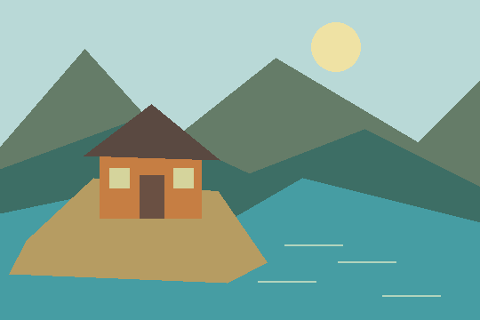

A field note
Keep a little wonder.
Wandering letters
Georgia italic, in the page's own ink.

Same-origin raster. Selected tiles loosen.
Keep a little wonder.
Choose the lower edge to flex the card.
The spider never activates it.
A small break and recoil.
Pixels stay on the page. A few rim threads move.